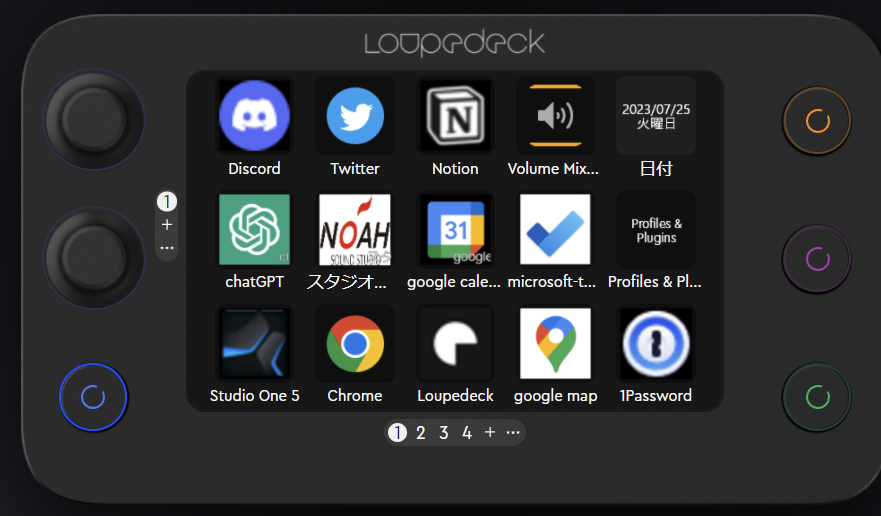

20230725
- One minute read - 44 wordsやったこと
- loupedeckを買った
- 一番小さいやつ
- きっかけは趣味のDTMの生産性UPでいろんなとこで聞くようになっていて気になっていた
- ガシェット系youtuberを見漁ってこれに決めた

- loupedeckのソフトウェアをいろいろセットアップした
- ボタン一つでいろいろ呼び出せるように
- このブログにCSSを追加する方法を学んだ
- アフィリンクも登録しようとしたけど、クローキングとかをしなきゃいけないっぽいのでいったん放置
- 興味はある
所感
- まだ三日くらいしか使ってないがとてもいい
- 一個設定すると一個便利になるのでハマってしまう
- 生産性に直結する
- logicool optionsとかも使ってなかったけどやってみようかなという気持ちになった
- 今のところの設定画面

学び
-
windowsのURIスキームというものを学んだ
-
これを知るまでアプリ一覧からもなんか出てこないし、管理者権限必要なディレクトリのアプリってどうやって起動するんだ～～と永遠に調べていた
- 気づきはmicrosoft storeからのアプリであることに気づいたこと
- そのあたりのワードでググったら出てきた
-
anankeにCSSが効かなくて困った
- どうやら
themes/ananke以下のassetsやらlayoutsやらをいじらなければいけなかったっぽい こういうのあるからCSS嫌いstatic以下に置けばimagesで参照できるよ！的なやつもこれが原因かと思ったけど違ったっぽい- 日付ごとにフォルダ作って
images作らないといけないのめんどい～～
- 日付ごとにフォルダ作って
- 本当はこの辺もデフォルトのテーマ入れてるだけだから、どっかで選んでいい感じにしたい
- だけど対応してるものとか、いろんなものに耐えてる信頼と実績を考えるとこのままでもいい気もしている
- 詳しくないものはデフォルトに倣う
- どうやら